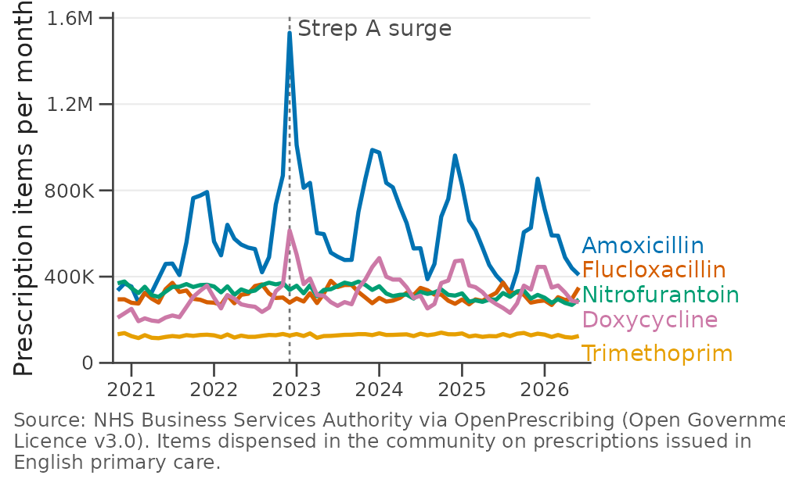

opamr has three parts:
-
A crosswalk between antimicrobial names,
AMRpackage codes, ATC codes and British National Formulary (BNF) chemical codes. It is bundled with the package and works offline. - Functions for the OpenPrescribing API, which serves monthly prescribing data for English primary care by practice, Primary Care Network (PCN), Sub-ICB Location, ICB and region.
- Figure functions for prescribing time series, seasonality, variation between organisations and drug-by-month heatmaps, sized and styled for journals.
This vignette shows each part using only bundled data, so every chunk
runs without a network connection.
vignette("api", package = "opamr") covers downloading
data.
From antimicrobial names to BNF codes
Prescribing data are indexed by BNF code, while resistance data and
the AMR package use antimicrobial names, AMR
codes or ATC codes. ab_to_bnf() converts any of these:
ab_to_bnf(c("amoxicillin", "NIT", "J01AA02"), use_amr = FALSE)
#> input ab ab_name atc bnf_chemical_code
#> 1 amoxicillin AMX Amoxicillin J01CA04 0501013B0
#> 2 amoxicillin AMX Amoxicillin J01CA04 0501013C0
#> 3 NIT NIT Nitrofurantoin J01XE01 0501130R0
#> 4 J01AA02 DOX Doxycycline J01AA02 0501030I0
#> 5 J01AA02 DOX Doxycycline J01AA02 0501030Z0
#> bnf_name bnf_section via
#> 1 Amoxicillin 0501 bundled table
#> 2 Amoxicillin sodium 0501 bundled table
#> 3 Nitrofurantoin 0501 bundled table
#> 4 Doxycycline hyclate 0501 bundled table
#> 5 Doxycycline monohydrate 0501 bundled tableOne antimicrobial can have several BNF chemical codes, one for each
salt or formulation, such as the two doxycycline salts. ATC prefixes and
AMR group names select a whole class:
ab_to_bnf("J01MA", output = "codes") # quinolones
#> [1] "0501120L0" "0501120P0" "0501120Q0" "0501120X0" "0501120Y0"The reverse direction accepts any BNF level, from a 15-character presentation code up to a section:
bnf_to_ab(c("0501013B0AAAAAA", "0501130R0"))[, c("input", "ab", "ab_name", "atc")]
#> input ab ab_name atc
#> 1 0501013B0AAAAAA AMX Amoxicillin J01CA04
#> 2 0501130R0 NIT Nitrofurantoin J01XE01vignette("crosswalk", package = "opamr") describes how
the crosswalk was built and where it stops.
Prescribing data
The live functions return a tidy data frame with one row per code, organisation and month:
use <- op_spending_ab(c("amoxicillin", "nitrofurantoin", "doxycycline")) # England
sub <- op_antibiotic_use("co-amoxiclav", org_type = "sicbl", org = "02P") # items per 1,000 patientsThe bundled op_example dataset has the same layout as
op_spending_ab() output. It covers national monthly totals
for every antibacterial in BNF section 5.1 from November 2020 to June
2026, aggregated from the NHS Business Services Authority English
Prescribing Dataset.
str(op_example)
#> 'data.frame': 3967 obs. of 11 variables:
#> $ date : Date, format: "2020-11-01" "2020-12-01" ...
#> $ org_type : chr "national" "national" "national" "national" ...
#> $ org_id : chr "england" "england" "england" "england" ...
#> $ org_name : chr "England" "England" "England" "England" ...
#> $ ab : chr "AMC" "AMC" "AMC" "AMC" ...
#> $ ab_name : chr "Amoxicillin/clavulanic acid" "Amoxicillin/clavulanic acid" "Amoxicillin/clavulanic acid" "Amoxicillin/clavulanic acid" ...
#> $ atc : chr "J01CR02" "J01CR02" "J01CR02" "J01CR02" ...
#> $ code : chr "0501013K0" "0501013K0" "0501013K0" "0501013K0" ...
#> $ items : num 101252 106519 103371 92852 101757 ...
#> $ quantity : num 3801733 3996897 3896844 3461299 3780092 ...
#> $ actual_cost: num 290883 307438 323383 288893 315606 ...
range(op_example$date)
#> [1] "2020-11-01" "2026-06-01"The ten most-prescribed antibacterials over the period:
tot <- aggregate(items ~ ab_name, data = op_example, FUN = sum)
tot$share <- round(100 * tot$items / sum(tot$items), 1)
head(tot[order(-tot$items), ], 10)
#> ab_name items share
#> 1 Amoxicillin 41133222 23.1
#> 42 Nitrofurantoin 22487150 12.6
#> 24 Doxycycline 21713878 12.2
#> 29 Flucloxacillin 21043648 11.8
#> 46 Phenoxymethylpenicillin 13547050 7.6
#> 18 Clarithromycin 10467906 5.9
#> 59 Trimethoprim 8680196 4.9
#> 2 Amoxicillin/clavulanic acid 7020572 3.9
#> 36 Lymecycline 5089794 2.9
#> 8 Cefalexin 4899738 2.8A first figure
top <- op_example[op_example$ab_name %in% c("Amoxicillin", "Doxycycline", "Nitrofurantoin",
"Flucloxacillin", "Trimethoprim"), ]
op_plot_trend(top, y = "items",
events = data.frame(date = "2022-12-01", label = "Strep A surge"))
Each line is labelled at its right-hand end, so there is no legend.
The colours come from the colour-blind-safe Okabe-Ito palette. The
caption cites the data source and licence. op_save() writes
the figure at a journal column width:
p <- op_plot_trend(top, y = "items")
op_save(p, "figure1.pdf", width = "single") # 85 mm wide; "onehalf" = 120 mm, "double" = 178 mmvignette("figures", package = "opamr") covers all of the
figure functions.
What the data measure
- Setting. Items dispensed in the community on prescriptions issued in English primary care. Hospital inpatient use is not included.
-
Unit. The prescription item, which says nothing
about dose, duration or the patient.
quantityis in product units (tablets, ml), so it cannot be compared across drugs. - Timeliness. Data are published monthly, about two months after dispensing.
- Licence. Open Government Licence v3.0. Cite the NHS Business Services Authority and OpenPrescribing (Bennett Institute for Applied Data Science, University of Oxford).